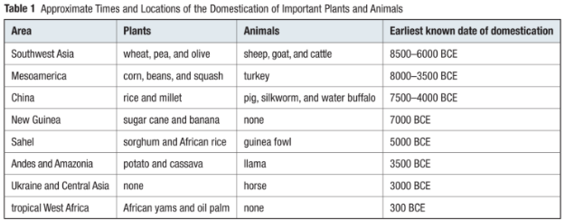
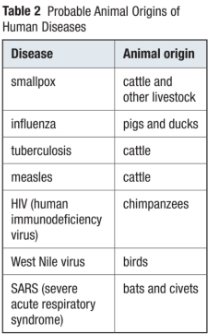

Callout
100,000 years ago, → Few thousand People
Current Human Population → 7 billion People
How did the human population achieve this astounding growth?
Some areas continue to grow and increase in density, while others stabilize or even decline
For most of human history, the world population grew slowly in response to density-dependent environmental factors:
Over the past two centuries, however, the world population has grown exponentially. Demographers have identified four ways that humans have avoided the effects of density-dependent regulating factors.
We have expanded our geographic range alleviating competition for space.
Approximately 10,000 to 12,000 years ago, people began planting seeds to grow food. However, evidence suggests that the idea of cultivating crops developed slowly over thousands of years.
The advent of agriculture dramatically changed the course of human existence. Many of the same foods that we eat today were among the first to be farmed by our early ancestors.
Animals in these areas converted the native inedible plants into food that could be eaten.
People in these permanent communities were able to modify their natural environment through irrigation and specialized crop cultivation.
This led to the development of food storage practices and technologies, which resulted in surplus food production.

Callout
Increased population density made it easier for disease-carrying organisms to spread.
A pathogen can cause an epidemic if a community lacks the proper resistance to the pathogen.
Pathogen is a disease-causing agent, such as a microbe or fungus.
Epidemic is the spread of a disease beyond a very local population.
China, Southeast Asia, North Africa, and Europe experienced some of the worst epidemics in human history. However, it was in these regions of the world that humans started to develop resistance.
The Aboriginal peoples had serious diseases that were contracted by the Europeans, but these diseases were not adapted to move through large populations.
Therefore, they were less devastating to the European populations as a whole.
However, industrialization imposed pressures on the environment due to the increased extraction and consumption of raw materials, pollution emissions, and demand for energy.

Callout
Science and technology have been influential throughout much of human history, in terms of both their social and environmental impacts.
All of these innovations affected the environment, either directly by increasing pollution or indirectly by leading to an increase in the human population. By the end of the seventeenth century, science had become an established empirical body of knowledge.
In biology, the cell theory and the germ theory of disease provided the foundation for modern medicine.
The major changes in agriculture, manufacturing, mining, transportation, and technology of the Industrial Revolution in the eighteenth century had a profound effect on the socioeconomic and cultural conditions of the times.
The Industrial Revolution was a period of great technological advancement from the 1800s to the 1900s, during which machines were developed.
Major breakthroughs included improving sanitation and waste removal, improving the quality of the water supply and expanding access to clean water, researching the causes and understanding the transmission of infectious diseases, and developing antibiotics and vaccines (injections of inactive or dead viruses that create resistance).
The vaccine is an injection of a dead or inactivated virus to spur an immune response. Safer workplaces, limits on child labor, and better nutrition also improved public health.
During the Industrial Revolution, Earth’s population doubled to one billion. It doubled again over the next hundred years.
These included land erosion from deforestation for housing, the loss of large areas of habitat for agricultural purposes, the drainage of wetlands, the depletion of forests for logging, and the extinction or decline of many species that were overharvested (such as whales, bison, and passenger pigeons).
Select each tab to learn more.
In 2000 CE, the worldwide annual growth rate for the human population was 1.26 %.
Demographers are often interested in the age structure of a population.
Population pyramid is a tool that shows the distribution of ages among the males and females in a population
Population pyramid is represented by a horizontal bar graph that illustrates the distribution of different age groups in a population, with the number of males on the left and the number of females on the right.
From the above figure:
In the 2006 Census of Canada, 1,172,790 respondents, or about 3.8% of Canada’s population, identified themselves as Aboriginal peoples.
Aboriginal peoples are the descendants of First Nation, Métis, or Inuit people.
People may identify themselves as Aboriginal if they are Registered Treaty Indians or members of a band or First Nation.
The provinces and territories with the highest proportion of Aboriginal populations were Nunavut (85.0 %), the Northwest Territories (50.3 %), Yukon (25.1 %), Manitoba (15.5 %), and Saskatchewan (14.9 %).
According to the 2006 census data, Aboriginal peoples in Canada are increasingly living in urban areas, with only 46 % living in rural areas.
Aboriginal peoples are very diverse. They speak many different languages, enjoy different cultural practices, and participate in varying forms of government.
Treaties were drawn up by the Government of Canada for the purpose of resettlement, attempting to extinguish the rights of Aboriginal peoples to their land.
These legal decisions are providing more opportunities for Aboriginal communities to participate in joint government ventures and resource partnerships in forestry, fisheries, and wildlife boards across Canada.
The demographics of the Aboriginal population in Canada differ greatly from the demographics of the non-Aboriginal population.
The non-Aboriginal population pyramid reflects. a much slower growth pattern.
Callout
The relationship between population growth and economic development has been studied extensively. The conventional view is that population growth means more people competing for limited natural and economic resources.
The demographic transition model is a diagram that illustrates changes in how people live to explain shifts in population sizes.
The model in the next slide describes historical changes in demographic patterns in the industrialized countries of Western Europe. However, we do not know if it accurately predicts the future of developing nations.
Callout
The birth rate declines, causing a drop in the rate of population growth. Today, the United States, Canada, Australia, Japan, Russia, and most of Western Europe are in the industrial stage. Their growth rates are slowly decreasing.
Most governments realize that increased population size is now a major factor that causes resource depletion, excessive pollution, and an overall decline in quality of life.
However, even if each couple on Earth produced only two children, the human population would continue to grow for at least another 60 years.
Continued population growth is inevitable because today’s children, who outnumber adults, will soon mature and reproduce.
The worldwide population will stabilize only when the age distributions for all countries resemble the age distributions for countries with ZPG.
Obviously, the first population will grow much more slowly than the second.